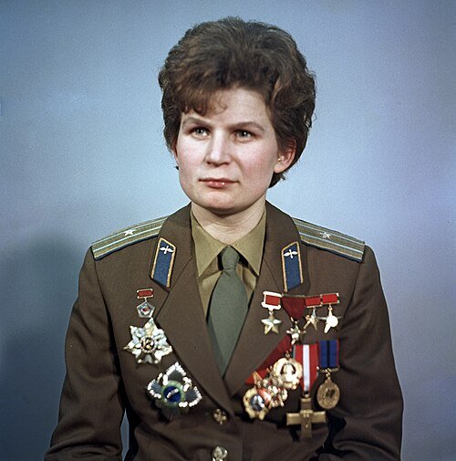
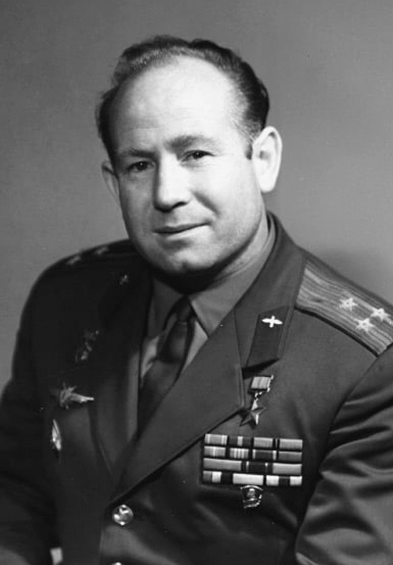

Июнь 1963 года. С космодрома Байконур стартует корабль «Восток-6», на борту которого — первая в мире женщина-космонавт Валентина Терешкова. Чтобы не волновать семью, она сказала родным, что уезжает на соревнования по парашютному спорту. О её настоящей миссии они узнали только из выпусков новостей. Перед стартом прозвучало: «Эй! Небо! Сними шляпу!» — эти слова из Маяковского стали её вызовом земному притяжению.
Позади остался строжайший отбор. Из сотен претенденток, преимущественно парашютисток, выбрали всего пятерых. Терешкова, 26-летняя ткачиха из ярославской деревни, проходила подготовку наравне с мужчинами: термокамеры с температурой выше семидесяти градусов, сурдокамера с полной изоляцией, тренировки в невесомости на самолётах. Важным оказалось не только здоровье, но и происхождение — отец погиб на финской войне, мать работала на заводе. Это делало её идеальным кандидатом с точки зрения советской пропаганды.
Полёт продлился почти трое суток. Терешкова, позывной «Чайка», провела на орбите 48 витков вокруг Земли — больше, чем все американские астронавты вместе взятые к тому времени. Она вела бортовой журнал, фотографировала горизонт, поддерживала связь с Землёй и с Валерием Быковским на корабле «Восток-5». Но в полёте случилось непредвиденное: ошибка в программе управления вместо спуска заставляла корабль подниматься на более высокую орбиту. Терешкова заметила это на первые сутки, связалась с Королёвым и Гагариным, получила новые данные и ввела их вручную. После приземления Королёв попросил: «Чаечка, я тебя прошу — не надо об этом говорить». И она молчала почти тридцать лет.
До сих пор полёт Терешковой остаётся единственным в истории одиночным женским выходом в космос. Ни одна другая женщина больше не отправлялась на орбиту одна.

Меньше чем через два года — новый рубеж. 18 марта 1965 года стартовал корабль «Восход-2» с командиром Павлом Беляевым и пилотом Алексеем Леоновым. Предстояло то, чего не делал никто: выйти в открытый космос. Сергей Королёв напутствовал Леонова: «Я прошу одно. Ты, Лёша, только выйди из корабля и войди в корабль».
Леонов оттолкнулся от шлюзовой камеры, и его первые слова были: «А Земля-то круглая». Двенадцать минут и девять секунд он парил в чёрной пустоте, связанный с кораблём пятиметровым фалом, передавая на Землю свои впечатления. Но возвращение оказалось на грани катастрофы. В вакууме скафандр раздулся так, что Леонов не мог протиснуться в люк. Инструкция запрещала снижать давление внутри скафандра — это грозило «закипанием» азота в крови. Но выбора не было. На свой страх и риск он стравил давление, влез в шлюз головой вперёд (вместо положенного ногами), развернулся и закрыл за собой люк.
На этом испытания не кончились. Автоматика отказала, и Беляев впервые в истории сажал корабль вручную. «Восход-2» приземлился в глухой тайге, в 180 километрах от Перми. Космонавты провели двое суток в лесу при морозе, пока спасатели на лыжах добирались до них. Когда их нашли, Беляев пошутил: «Ну, если месяца через три за нами на собаках приедут, здорово будет». Сам Леонов вспоминал тот миг, когда шагнул в бездну, с неизменным юмором: «Назвался космонавтом — вылезай в космос».